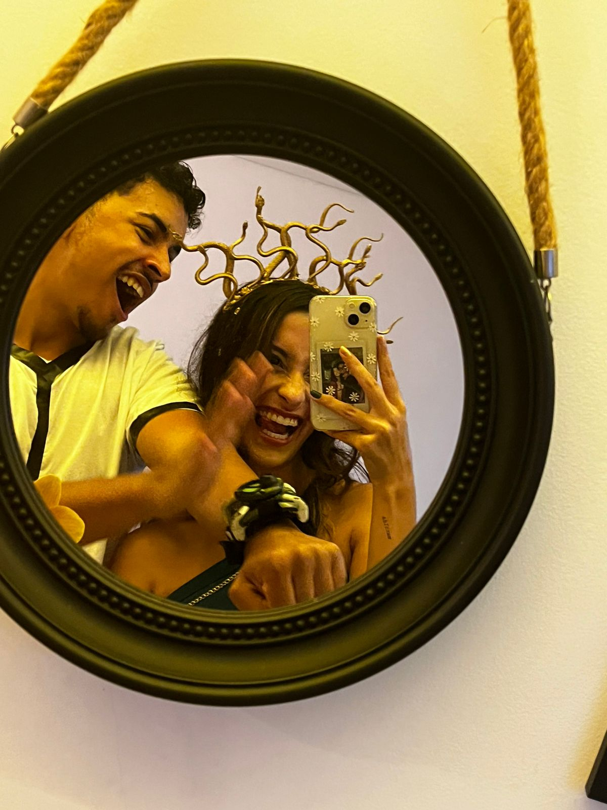

CONTADOR DE TEMPO
Bem-vindo ao nosso contador do tempo! Aqui, celebramos cada instante desde que Luiza Garcia Vieira, a apaixonada por língua portuguesa e tangerinas, e Jeanlucas, o curioso explorador do Sudeste Asiático e dos anos 2000, se conheceram. Desde aquele dia mágico, 9 de setembro de 2024, às 12:53, nossa jornada juntos começou, e estamos contando cada segundo com amor. Explore nossas fotos e veja quanto tempo já passamos juntos. Cada dia é uma nova aventura!


TEMPO JUNTOS
Dias
Horas
Minutos
Segundos